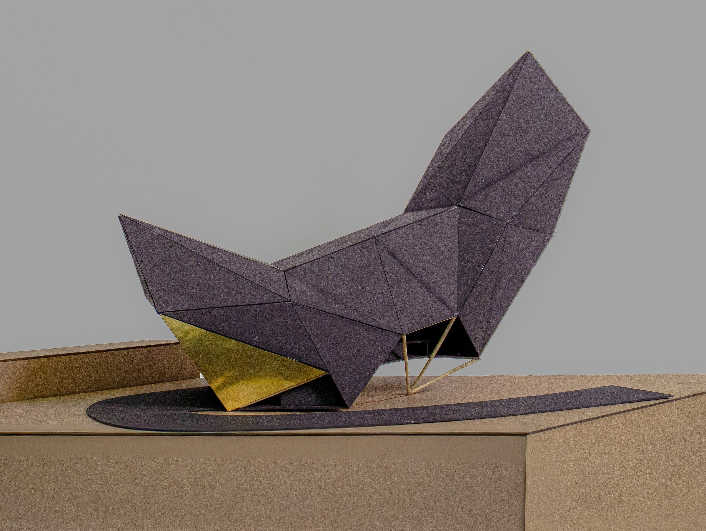
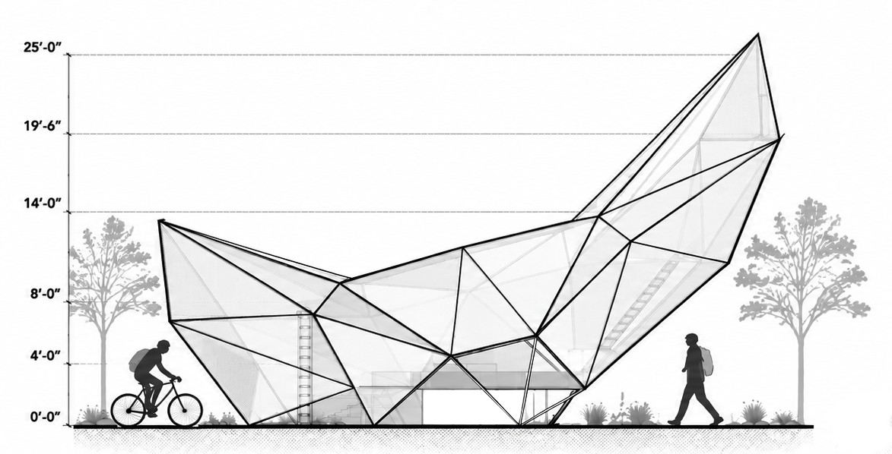
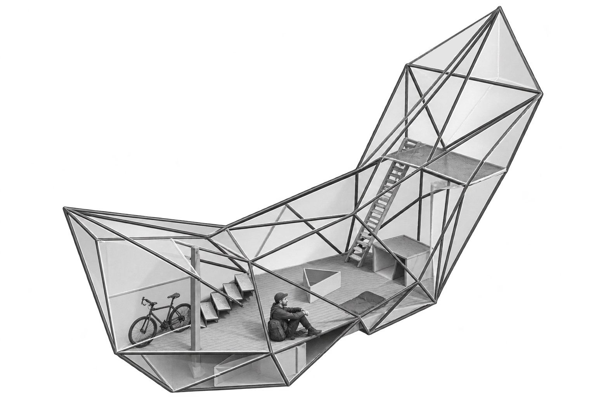
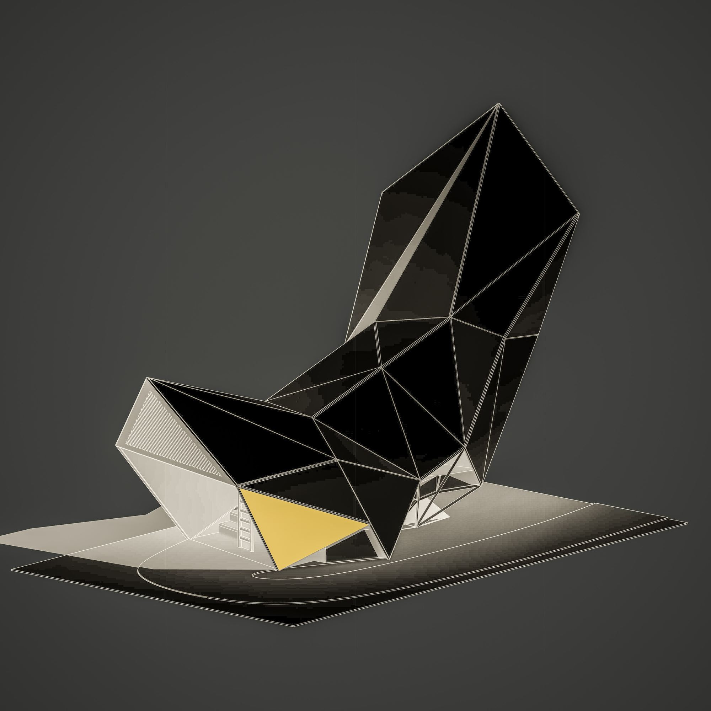
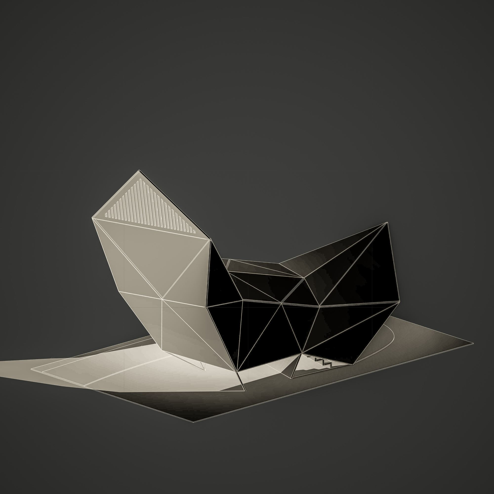
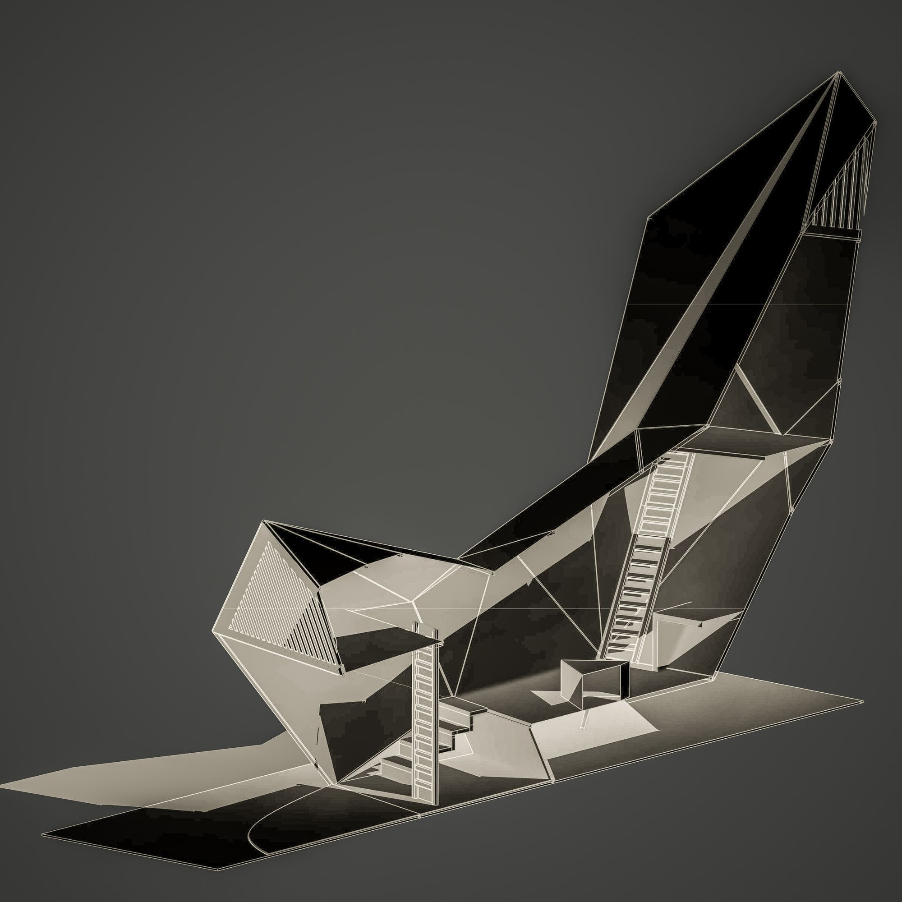
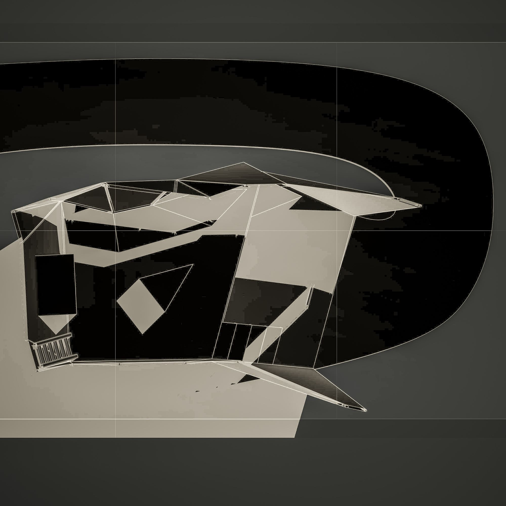
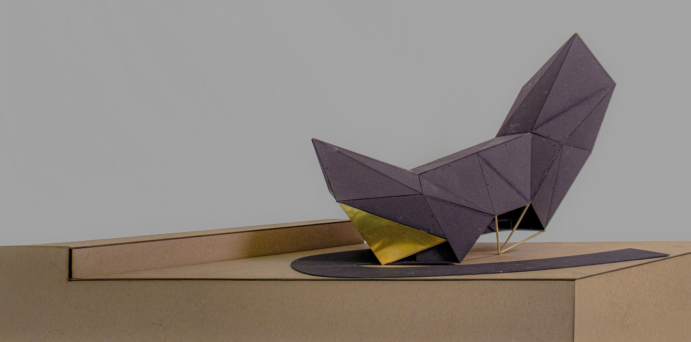

Projects / 05
Shelter
Performative bodies: a shelter for two on the Erie Canal trail
The second project of the studio continued the study of movement and transformation and introduced scale and occupation. It began with the body: the human form was scanned and modelled to read its scales and the surfaces and spaces it produces as it moves through space and time.
Design
“All movement is the product of two factors: time and space; to know the movement of a body is to know the series of positions which it occupies in space during a series of successive instants.” (Étienne-Jules Marey, 1868). The shelter reuses the faceted logic of the salt vessel: a folded shell of planes that wraps around two bodies.
Details
A free-standing shelter on the Empire State Trail, beside the preserved Erie Canal in Chittenango, for two people who may or may not know one another. A reinvention of the primitive hut, it opens to the canal and answers wind, light and weather: an architecture of fragility and change rather than of control over nature.
From the body
The second project of the studio continued the study of movement and transformation and introduced scale and occupation. It began with the body: the human form was scanned and modelled to read its scales and the surfaces and spaces it produces as it moves through space and time.
All movement is the product of two factors: time and space; to know the movement of a body is to know the series of positions which it occupies in space during a series of successive instants.
Étienne-Jules Marey, 1868, quoted in the studio brief
A shelter for two
From that study came a free-standing shelter on the Empire State Trail, beside the preserved Erie Canal in Chittenango, for two people who may or may not know one another. A reinvention of the primitive hut, it reuses the faceted logic of the salt vessel: a folded shell of planes that wraps around two bodies, opens to the canal and answers wind, light and weather, an architecture of fragility and change rather than of control over nature.


Elevations and sections




Physical model

Process
The shelter is less an object than a pause along the trail: a place to sit, wait and watch the water. The elevations and sections show two bodies inside one folded shell, read against the scale of the people walking and cycling on the Erie Canal trail.